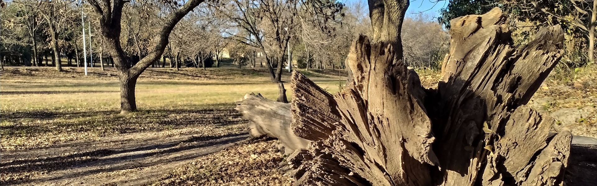

Lo primero por aseverar es que en coincidencia con la Dra. Ana María Franchi, Presidenta del CONICET, la ciencia y la tecnología, en cualquiera de sus prácticas, son fundamentales para el desarrollo soberano, sustentable e inclusivo
de un país. El impulso a un modelo productivo y sociocultural que promueva la inclusión y la equidad, apoyándose en la ciencia, la tecnología y el conocimiento generados en nuestro países un camino que se debe mantener a lo largo
de tiempo. Al respecto, la presidenta de CONICET asegura que “que todo los gobiernos deben apoyar y apoyarse en la ciencia porque esta sirve para resolver problemas, si se resuelven esos problemas entonces quiere decir que la gente vive mejor. Para la ciencia se genera un circulo virtuoso por que la sociedad es la que financia nuestra ciencia y los científicos le devuelven ese esfuerzo con el aporte de sectores de la comunidad científica. Creo que esta pandemia demostró a la sociedad y a los propios científicos que Argentina necesita de la ciencia y del sistema científico”.
Chaqui
ofrece un análisis valioso de lo ocurrido a principio de siglo y que se relaciona con esto:“A partir de 2007, una cantidad de políticas públicas se terminaron de consolidar por el Ministerio de Ciencia y Tecnología y toman la forma de articulación público-privada, la cual entendemos, debe ser parte de este modelo de gestión conjunto entre el Estado en sus diferentes organismos (universidades, centros de investigación, instituciones académicas y técnicas), con empresas privadas que poseen intereses comunes. La relación entre ambos sectores se ve materializada en emprendimientos conjuntos, proyectos, institutos, contratos, consorcios, etcétera. (Chaqui,
2017:46).
En nuestra mirada, esta articulación es una herramienta de relacionamiento entre Estado y el sector privado, en línea con el objetivo marco de constituir un Estado promotor de la innovación científica y productiva. Estas acciones podrán llevar a un cambio del paradigma de desarrollo en nuestro país solamente si se continúan como política de Estado”
Entonces,
el aprovechamiento de la plataforma que se ha construido requiere de alianzas estratégicas entre Estado con el sector privado.
Ahora bien, el nuevo desafío con vistas a futuro es redoblar la apuesta. El Ministerio de Ciencia,
y en consonancia con los distintos gobiernos provinciales y sus carteras, debe impulsar la generación de ecosistemas de innovación. Estos espacios deben incentivar lo que el sector académico estatal y el sector productivo por sí
solos no pueden generar: el ambiente ideal para el intercambio de capitales.
Se debe intentar volver al horizonte de incrementar la inversión en I+D+i, hasta llevarla a un 1% del PBI. También se necesita fomentar el incremento
de la inversión privada, como ocurre en los países más desarrollados. “Esto no acontecerá si no se plantean alianzas estratégicas en los sectores más competitivos de nuestra economía, con un sentido federal e inclusivo en el que cada actor pueda brindar su experiencia y conocimiento para dar lugar a una interacción sinérgica y virtuosa con el desarrollo como objetivo último”. (Mazzucatto, 2013:62) Para finalizar:“No debemos suponer que las empresas poseen un espíritu animal por la inversión, sino que el Estado debe fomentar la creación de alianzas público-privadas dinámicas”. (Mazzucatto,
2013:70)
En la siguiente infografía se muestra el recorrido en la línea pensamiento y las conclusiones arribadas.